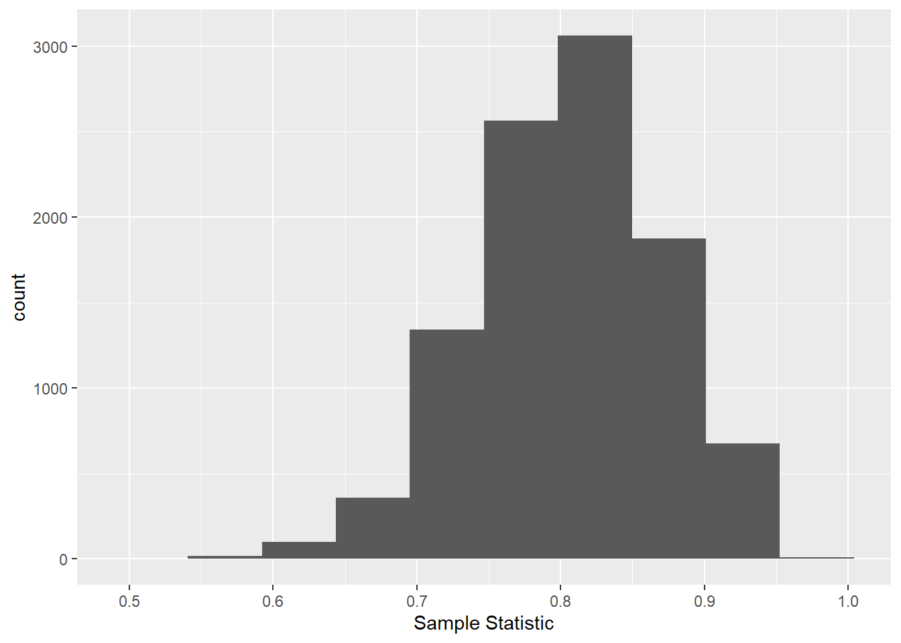

Chapter 24 Appendix - Notation
24.1 Standard notation
Vectors of variables are denoted with Roman letters, such as \(x\) and \(Y\). Capital letters denote random variables while lower case letters denote fixed variables. Note that these vectors may be of length 1 depending on context. Bolded values (\(x\)) denote matrices, and in the case of \(Y\), possibly single-column matrices.
Unknown parameters are denoted with Greek letters, with boldface font indicating matrices.
In most models, \(Y\) will denote the univariate response, \(x\) will describe a matrix of predictor variables, and \(E\) a vector of random errors. The Greek letter \(\beta\) will be commonly used for regression parameters (either with subscripts for each values as in \(\beta_0 + \beta_1 X_1\) or as a vector (as in \(X\beta\)). The letters \(i, j, k,\) and \(l\) will be most commonly used as subscripts or indices. \(N\) will typically denote a sample size (not a random vector), with subscripted versions (\(n_i\)) describing the number of observations in a group, and \(p\) describing the number of parameters in a model beyond the intercept.
We may therefore describe a simple linear regresion model as:
\[Y = x\beta + E\]
In this model, \(Y\) is a \(N\times 1\) random vector, \(x\) is a \(N\times (p + 1)\) matrix of fixed values, and \(E\) is a \(N \times 1\) vector.
\(\pi\) is typically used to describe probability parameters, as in Bernoulli or binomial random variables.
24.2 Mixed models
Still need to add something for this
24.3 Effects model representation
In the effects formulation of ANOVA models, additional greek letters (\(\alpha\), \(\gamma\), etc.) will appear as parameter effects, as will \(\mu\), which will typically represent the grand mean. Group-specfic means will be denoted via subscripts: \(\mu_{ij}\). When using this representation, it is convenient to describe a single observation as \(Y_{ijk}\), which is the \(k\)th observation from the group with with the \(i\)th level of the first factor and the \(j\)th level of the second factor. In the main effects version of this model, we have:
\[Y_{ijk} = \mu + \alpha_i + \gamma_j + E_{ijk}\]
We can therefore estimate \(\mu_{ij}\) as \(\hat \mu_{ij} = \frac{1}{n}\sum_{k = 1}^n Y_{ijk} = \bar{Y}_{ij\cdot}\). This “dot” notation can be extended to any subscript and indicates summing over the index that has been replaced by the dot. Further note that the “hat” over a paremeter value denotes the estimator for that parameter value, and the “bar” indicates an average. These features are used generally throughout this book.
24.4 Estimators vs. Estimates
If we want to get pedantic, we can differentiate between estimates and estimators in our notation. Estimators are functions of random variables used to estimate parameters. Estimates are realized values of estimators. To differentiate these, we use Roman letters with hats to represent estimators (\(\hat B = (x'x )^{-1}x'Y\)) and Greek letters with hats to represent estimates (\(\hat \beta = 1.52\)).
24.4.1 Installing R and RStudio
The R software itself can be downloaded and installed by visiting the Comprehensive R Archive Network (Cran) website. Here there are links to install R for Linux, Mac, and Windows based machines.
For Windows users, follow the inital ‘Download R for Windows’ link and then click ‘install R for the first time.’ From here you should now see a Download R X.x.x for Windows link that will download a .exe file. Once downloaded run that file and follow the prompts.
For Mac users, follow the inital ‘Download R for (Mac) OS X’ link and click on the link near the ‘Latest Release’ section similar to R-x.x.x.pkg. Once downloaded, you should be able to install by double clicking on the file.
For Linux users, follow the inital ‘Download R for Linux’ link. Choose your OS and instructions are given on how to download R.
Once you’ve installed R you’ll want to install RStudio. RStudio is a well developed environment that makes programming in R much easier! To download head to RStudio’s download page. From here choose RStudio Desktop (Open Source License) and a page with appropriate links to install are provided.
24.4.2 Using RStudio
To program in R you’ll want to open RStudio. RStudio will submit R code for you so you never actually need to open R itself.
There are four main ‘areas’ of the RStudio IDE:
Console (& Terminal)
Scripting and Viewing Window
Plots/Help (& Files/Packages)
Environment (& Connections/Git)
You may wish to rearrange the panes. This can be done via the menus at the top. Choose “Tools –> Global Options”.

Other useful global options to chnage are under the appearance tab (font size, theme) and under the code tab (editing –> soft-wrap, display –> show whitespace).
24.4.2.1 Console
To evaluate code you can type directly into the console.
#simple math operations
# <-- is a comment - code not evaluated
3 + 7## [1] 1010 * exp(3) #exp is exponential function## [1] 200.8554log(pi^2) #log is natural log by default## [1] 2.28946mean(cars$speed)## [1] 15.4hist(cars$speed)
In the R sections of the book we spend much of our time learning the R syntax needed to create the appropriate summaries or analysis.
24.4.2.2 Scripting and Viewing Window
Usually you don’t want to type code directly into the console because there isn’t an easy way to get the code for later use. Instead code is usually written in an R ‘script’ which is then saved.
From an R script you can send code to console via:
“Run” button (runs current line)
CTRL+Enter (PC) or Command+Enter (MAC)
Highlight section and do above
To create a new R script you can use the menus at the top and go to File –> New File –> R Script. Take a moment and do this! Type the following into your script:
View(cars)(note capitalV)plot(cars)
Submit it to the console using a button or hot key!
24.4.2.3 Plots/Help
Created plots are stored in the Plots tab. This is a nice feature that allows you to cycle through past plots and easily save plots via menus.
In this pane there is also a Help tab that will enable you to learn about R functions. In the console type help(hist) for instance. Information about the hist function is presented. Being able to parse these types of help files is a really useful skill!
For every R function there are a few sections:
Description - What the function is intended for.
Usage - How to call the function, inputs required, and which inputs have default arguments.
- Here we see
hist(x, ...). This implies there is only one required input,x, and there is no default.
- Below you see a more detailed call to
histthat includes other inputs. Each of these inputs has an equal sign with a value after it. This is the default value for that input (since there is a default value you don’t have to specify it when you call). For instance thebreaks = "Sturges"input implies that the “Sturges” method is the default for determining how the bins of the histogram are created.
- Here we see
Arguments - Describes the input requirements in more detail.
Details - Information about how the function works.
Values - Information about what is returned to the user.
References
See Also - Related functions.
Examples - Highly useful section giving code you can copy and paste to see an example of how the function can be used.
24.4.2.4 Environment
R stores data/info/functions/etc. in R objects. An object is a data structure having attributes and methods (more on this shortly). You can create an R object via <- (recommended) or =.
#save for later
avg <- (5 + 7 + 6) / 3
#call avg object
avg## [1] 6#strings (text) can be saved as well
words <- c("Hello there!", "How are you?")
words## [1] "Hello there!" "How are you?"Notice that when you send the line avg <- (5+ 7 + 6) / 3 to the console (i.e. create the object avg) that nothing prints out. This is common behavior when storing the object. The output or information is saved for later use in the object. To see the output or information you then simply call the object (a default printing method is used to display it).
You can look at all current objects with ls().
ls()## [1] "alpha" "aoc" "avg" "fit" "lower_bound"
## [6] "mat" "n" "pihat" "tb" "upper_bound"
## [11] "v" "vec" "words" "x" "y"
## [16] "z"Use rm() to remove an object.
rm(avg)
ls()## [1] "alpha" "aoc" "fit" "lower_bound" "mat"
## [6] "n" "pihat" "tb" "upper_bound" "v"
## [11] "vec" "words" "x" "y" "z"Built-in objects exist like letters and cars.
letters## [1] "a" "b" "c" "d" "e" "f" "g" "h" "i" "j" "k" "l" "m" "n" "o" "p" "q" "r" "s"
## [20] "t" "u" "v" "w" "x" "y" "z"head(cars, n = 3)## speed dist
## 1 4 2
## 2 4 10
## 3 7 4The function data() shows available built-in datasets.
You should now be roughly familiar with the four main ‘areas’ of the RStudio IDE:
Console (& Terminal)
Scripting and Viewing Window
Plots/Help (& Files/Packages)
Environment (& Connections/Git)
24.4.3 R Objects and Classes
R has strong Object Oriented Programming (OOP) tools.
Object: data structure with attributes (class)
Method: procedures (functions) that act on object based on attributes
R functions like print() or plot() act differently depending on an object’s class.
class(cars)## [1] "data.frame"plot(cars)
class(exp)## [1] "function"plot(exp)
Many R functions exist to help understand an R Object.
str()(structure)
str(cars)## 'data.frame': 50 obs. of 2 variables:
## $ speed: num 4 4 7 7 8 9 10 10 10 11 ...
## $ dist : num 2 10 4 22 16 10 18 26 34 17 ...class()
class(cars)## [1] "data.frame"typeof()
typeof(cars)## [1] "list"We’ll use these functions later to help us know how to extra information from an R object.
Recall that we can create an R object via <- (recommended) or =. This allocates computer memory to object. The object’s attributes depend on how you created it.
vec <- c(1, 4, 10)
class(vec)## [1] "numeric"fit <- lm(dist ~ speed, data = cars)
class(fit)## [1] "lm"24.4.4 Data Objects
To understand how to use R for data analysis we need to understand commonly used data structures:
1. Atomic Vector (1D)
2. Matrix (2D)
3. Array (nd) (not covered)
4. Data Frame (2D)
5. List (1D) 24.4.4.1 Atomic Vector
Let’s start with the most basic object and work our way up. An atomic vector is a 1D group of elements with an ordering.

All of the elements must be same ‘type’. Types include numeric (integer or double), character, or logical. We create an atomic vector with the c() function (‘combine’).
#vectors (1 dimensional) objects
x <- c(17, 22, 1, 3, -3)
y <- c("cat", "dog", "bird", "frog")
x## [1] 17 22 1 3 -3y## [1] "cat" "dog" "bird" "frog"In addition, many ‘functions’ output a numeric vector. Functions are at the heart of R so it is vital to understand them. The concept of a function is that there the function takes an input or inputs and maps those inputs to some output(s).

As an example, one function that outputs a numeric vector is the seq or sequence function. To know about a function you need to know about the inputs and ouputs. For seq we have the following:
+ Inputs = from, to, by (among others)
+ Output = a sequence of numbers
v <- seq(from = 1, to = 5, by = 1)
v## [1] 1 2 3 4 5str(v)## num [1:5] 1 2 3 4 5str tells about the object v:
numsays it is numeric[1:5]implies one dimensional with elements 1, 2, 3, 4, 5
The seq function is used quite a bit. There is a shorthand way to create an integer sequence using :.
1:20 ## [1] 1 2 3 4 5 6 7 8 9 10 11 12 13 14 15 16 17 18 19 20It is also important to know how R does math on its objects. R does elementwise addition/subtraction and multiplication/division to vectors, matrices, and data frames. (The matrix multiplicaiton operator is %*%.).
1:20/20## [1] 0.05 0.10 0.15 0.20 0.25 0.30 0.35 0.40 0.45 0.50 0.55 0.60 0.65 0.70 0.75
## [16] 0.80 0.85 0.90 0.95 1.001:20 + 1## [1] 2 3 4 5 6 7 8 9 10 11 12 13 14 15 16 17 18 19 20 21As we mentioned earlier, understanding help files is really useful to being about to program in R. As functions are ubiquitous in R we often need to learn about their inputs (or arguments) and we can do so using help.
To recap, our first commonly used R object for storing data is an atomic vectore. This is a 1D group of elements with an ordering where all of the elements are of the same type. Generally vectors are useful to know about but not usually useful for a storing a dataset exactly. They can often be considered as the ‘building blocks’ for other data types.
24.4.4.2 Matrix
A Matrix is a 2D data structure in R whose elements are all of the same type. The first dimension refers to the rows and the second dimension refers to the columns. A 2D data object is very common. The rows often represent the observations and the columns represent the variables. Although not technically right, it is useful to think of the columns of a matrix as vectors of the same type and length.

For instance, consider the three vectors created here:
#populate vectors
x <- c(17, 3, 13, 11)
y <- rep(-3, times = 4)
z <- 1:4These are all of the same type. This can be checked with an is. (read as ‘is dot’) function.
#check 'type'
is.numeric(x)## [1] TRUEis.numeric(y)## [1] TRUEis.numeric(z)## [1] TRUENot only are these three objects the same type but they are also the same length. This can be checked using the length function.
#check 'length'
length(x)## [1] 4length(y)## [1] 4length(z)## [1] 4Again, it is useful to visualize the columns of a potential matrix as these vectors. We can create the matrix using the matrix function. The matrix function requires us to give the data as one vector. We can combine the x, y, and z objects into one vector using the c funciton. This is the first argument to the matrix function. The only other argument required is to either specify the number of rows (nrow =) or the number of columns (ncol =) (R will attempt to figure out the one that is not given using the total length of the specified data vector).
#combine in a matrix
matrix(c(x, y, z), ncol = 3)## [,1] [,2] [,3]
## [1,] 17 -3 1
## [2,] 3 -3 2
## [3,] 13 -3 3
## [4,] 11 -3 4A matrix can also store character data as well. An example of this is given below and the number of rows is specified rather than the number of columns. Note the use of is.character from the is. family of functions.
x <- c("Hi", "There", "!")
y <- c("a", "b", "c")
z <- c("One", "Two", "Three")
is.character(x)## [1] TRUEmatrix(c(x, y, z), nrow = 3)## [,1] [,2] [,3]
## [1,] "Hi" "a" "One"
## [2,] "There" "b" "Two"
## [3,] "!" "c" "Three"To recap, a Matrix is a 2D data structure where we can think of the columns as vectors of the same type and length. These are useful for some datasets but most datasets have some numeric and some character variables.

Another 2D object called a data frame is perfect for this type of data!
24.4.4.3 Data Frame
A Data Frame is a 2D data structure where elements within a column must be of the same type but the columns themselves can differ in type. When thinking of a data frame, consider them as a collection (list) of vectors of the same length.

A data frame can be created with the data.frame function.
x <- c("a", "b", "c", "d", "e", "f")
y <- c(1, 3, 4, -1, 5, 6)
z <- 10:15
data.frame(x, y, z)## x y z
## 1 a 1 10
## 2 b 3 11
## 3 c 4 12
## 4 d -1 13
## 5 e 5 14
## 6 f 6 15You can also easily name the columns during creation.
data.frame(char = x, data1 = y, data2 = z)## char data1 data2
## 1 a 1 10
## 2 b 3 11
## 3 c 4 12
## 4 d -1 13
## 5 e 5 14
## 6 f 6 15Notice that char, data1, and data2 become the variable names for the data frame.
To recap, consider a data frame as a collection (list) of vectors of the same length. Tis type of data structure is perfect for most data sets! Most functions that read 2D data into R store it as a data frame.
24.4.4.4 List
A List is a 1D group of objects with ordering. Really it is a vector that can have differing elements. Think of this in a similar way to the atomic vector previously discussed except the elements are really flexible.

A list can be created with the list function. You specify the elements you want to include, separated by commas.
list(1:3, rnorm(2), c("!", "?"))## [[1]]
## [1] 1 2 3
##
## [[2]]
## [1] 0.9008016 -1.5937741
##
## [[3]]
## [1] "!" "?"Similar to a data frame, you can add names to the list elements during creation.
list(seq = 1:3, normVals = rnorm(2), punctuation = c("!", "?"))## $seq
## [1] 1 2 3
##
## $normVals
## [1] 0.3460836 2.4692143
##
## $punctuation
## [1] "!" "?"To recap, a list is a very flexible 1D object. It is really useful for more complex types of data.
The table below gives a summary of the data objects we’ve covered. For most data analysis you’ll use data frames.
| Dimension | Homogeneous | Heterogeneous |
|---|---|---|
| 1d | Atomic Vector | List |
| 2d | Matrix | Data Frame |
Next we look at how to access or change parts of our these common data objects.
24.4.5 Accessing Common Data Objects
When we are dealing with a data object (1D or 2D) we may want to extract a single element, certain columns, or certain rows. In this section we’ll look at how to subset or extract information from each of the common data objects covered in the previous section.
24.4.5.1 Atomic Vector (1D)
For atomic vectors (and lists, see later) you can return elements using square brackets []. You may notice that when R prints a vector to the console you often see [1] next to the first element and perhaps a [#] where R has to break and move to the next line of the console. The [1] implies the element printed next is the first element of the vector (R starts its counting at 1 not 0 like some other languages). The [#] implies that the element printed to the right is the # element of the vector. This is a good reminder of how to extract values from an atomic vector.
As an example, here we extract from a built-in R object called letters that is a vector of length 26 containing the letters of the alphabet.
letters #built-in vector## [1] "a" "b" "c" "d" "e" "f" "g" "h" "i" "j" "k" "l" "m" "n" "o" "p" "q" "r" "s"
## [20] "t" "u" "v" "w" "x" "y" "z"letters[1] #R starts counting at 1!## [1] "a"letters[26]## [1] "z"To obtain more than one element you can ‘feed’ in a vector of indices to that you’d like to return.
letters[1:4]## [1] "a" "b" "c" "d"letters[c(5, 10, 15, 20, 25)]## [1] "e" "j" "o" "t" "y"x <- c(1, 2, 5)
letters[x]## [1] "a" "b" "e"If you’d like to return all values except a certain subset, you can use negative indices.
letters[-(1:4)]## [1] "e" "f" "g" "h" "i" "j" "k" "l" "m" "n" "o" "p" "q" "r" "s" "t" "u" "v" "w"
## [20] "x" "y" "z"x <- c(1, 2, 5)
letters[-x]## [1] "c" "d" "f" "g" "h" "i" "j" "k" "l" "m" "n" "o" "p" "q" "r" "s" "t" "u" "v"
## [20] "w" "x" "y" "z"24.4.5.2 Matrices (2D)
For rectangular data like a matrix you can return rectangular subsets using square brackets with a comma [ , ]. Notice default row and column names when R prints a matrix!
mat <- matrix(c(1:4, 20:17), ncol = 2)
mat## [,1] [,2]
## [1,] 1 20
## [2,] 2 19
## [3,] 3 18
## [4,] 4 17This is a nice reminder of how to index a matrix. The value prior to the columns represents which row(s) you want to return and the value after the comma which column(s). If an index is left blank then all of that corresponding dimension (row or column) is returned.
mat[c(2, 4), ]## [,1] [,2]
## [1,] 2 19
## [2,] 4 17mat[, 1]## [1] 1 2 3 4mat[2, ]## [1] 2 19mat[2, 1]## [1] 2Notice that R simplifies the result where possible. That is, returns an atomic vector if you have only 1 dimension and a matrix if two. This can be changed by adding an additional argument to the [ function.
mat[ , 1, drop = FALSE]## [,1]
## [1,] 1
## [2,] 2
## [3,] 3
## [4,] 4Also, if you only give a single value in the [] then R uses the count of the value in the matrix. Counts go down columns first.
mat[5]## [1] 20If your matrix has column names associated with it, you can also use those to return columns of interest. To add column names we can look run help(matrix) to learn how! Notice the dimnames argument. You can specify names for the rows and columns by using a list with two vectors. The first vector indicating row names and the second column names. If we don’t want to give rownames we can give a NULL (a special value in R that is used for undefined values - here giving no specification of row names). We can do this and give a character vector for the column names.
mat<-matrix(c(1:4, 20:17), ncol = 2,
dimnames = list(NULL, c("First", "Second"))
)
mat## First Second
## [1,] 1 20
## [2,] 2 19
## [3,] 3 18
## [4,] 4 17Now we can request columns be using a single name or a character vector of names.
mat[, "First"]## [1] 1 2 3 4To return all but certain parts of a matrix you can still use negative indices but note that this won’t work with column names.
mat[-c(1,3), -"First"]## Error in -"First": invalid argument to unary operatormat[-c(1,3), "First"]## [1] 2 424.4.5.3 Data Frames (2D)
Since a data frame is also a rectangular data object you can return rectangular subsets using square brackets with a comma [ , ]!
As an example, we’ll subset the built-in iris data frame. To get an idea about this object we can run str(iris).
str(iris)## 'data.frame': 150 obs. of 5 variables:
## $ Sepal.Length: num 5.1 4.9 4.7 4.6 5 5.4 4.6 5 4.4 4.9 ...
## $ Sepal.Width : num 3.5 3 3.2 3.1 3.6 3.9 3.4 3.4 2.9 3.1 ...
## $ Petal.Length: num 1.4 1.4 1.3 1.5 1.4 1.7 1.4 1.5 1.4 1.5 ...
## $ Petal.Width : num 0.2 0.2 0.2 0.2 0.2 0.4 0.3 0.2 0.2 0.1 ...
## $ Species : Factor w/ 3 levels "setosa","versicolor",..: 1 1 1 1 1 1 1 1 1 1 ...We can see this is a data frame with a few columns, four are numeric and one is a factor (a special type of character vector essentially - these will be covered when we discuss plotting).
iris[1:4, 2:4]## Sepal.Width Petal.Length Petal.Width
## 1 3.5 1.4 0.2
## 2 3.0 1.4 0.2
## 3 3.2 1.3 0.2
## 4 3.1 1.5 0.2iris[1, ]## Sepal.Length Sepal.Width Petal.Length Petal.Width Species
## 1 5.1 3.5 1.4 0.2 setosairis[, 1]## [1] 5.1 4.9 4.7 4.6 5.0 5.4 4.6 5.0 4.4 4.9 5.4 4.8 4.8 4.3 5.8 5.7 5.4 5.1
## [19] 5.7 5.1 5.4 5.1 4.6 5.1 4.8 5.0 5.0 5.2 5.2 4.7 4.8 5.4 5.2 5.5 4.9 5.0
## [37] 5.5 4.9 4.4 5.1 5.0 4.5 4.4 5.0 5.1 4.8 5.1 4.6 5.3 5.0 7.0 6.4 6.9 5.5
## [55] 6.5 5.7 6.3 4.9 6.6 5.2 5.0 5.9 6.0 6.1 5.6 6.7 5.6 5.8 6.2 5.6 5.9 6.1
## [73] 6.3 6.1 6.4 6.6 6.8 6.7 6.0 5.7 5.5 5.5 5.8 6.0 5.4 6.0 6.7 6.3 5.6 5.5
## [91] 5.5 6.1 5.8 5.0 5.6 5.7 5.7 6.2 5.1 5.7 6.3 5.8 7.1 6.3 6.5 7.6 4.9 7.3
## [109] 6.7 7.2 6.5 6.4 6.8 5.7 5.8 6.4 6.5 7.7 7.7 6.0 6.9 5.6 7.7 6.3 6.7 7.2
## [127] 6.2 6.1 6.4 7.2 7.4 7.9 6.4 6.3 6.1 7.7 6.3 6.4 6.0 6.9 6.7 6.9 5.8 6.8
## [145] 6.7 6.7 6.3 6.5 6.2 5.9Notice the simplification done when a single column is selected. R will simplify to a vector unless drop = FALSE is included as done in the matrix section. (The simplification doesn’t occur when a single row is selected because data frames are actually lists - we’ll discuss this more in the list section!)
You can use columns names to subset as well.
iris[1:10 , c("Sepal.Length", "Species")]## Sepal.Length Species
## 1 5.1 setosa
## 2 4.9 setosa
## 3 4.7 setosa
## 4 4.6 setosa
## 5 5.0 setosa
## 6 5.4 setosa
## 7 4.6 setosa
## 8 5.0 setosa
## 9 4.4 setosa
## 10 4.9 setosaThe most common way to access a single columns is to use the dollar sign operator.
iris$Sepal.Length## [1] 5.1 4.9 4.7 4.6 5.0 5.4 4.6 5.0 4.4 4.9 5.4 4.8 4.8 4.3 5.8 5.7 5.4 5.1
## [19] 5.7 5.1 5.4 5.1 4.6 5.1 4.8 5.0 5.0 5.2 5.2 4.7 4.8 5.4 5.2 5.5 4.9 5.0
## [37] 5.5 4.9 4.4 5.1 5.0 4.5 4.4 5.0 5.1 4.8 5.1 4.6 5.3 5.0 7.0 6.4 6.9 5.5
## [55] 6.5 5.7 6.3 4.9 6.6 5.2 5.0 5.9 6.0 6.1 5.6 6.7 5.6 5.8 6.2 5.6 5.9 6.1
## [73] 6.3 6.1 6.4 6.6 6.8 6.7 6.0 5.7 5.5 5.5 5.8 6.0 5.4 6.0 6.7 6.3 5.6 5.5
## [91] 5.5 6.1 5.8 5.0 5.6 5.7 5.7 6.2 5.1 5.7 6.3 5.8 7.1 6.3 6.5 7.6 4.9 7.3
## [109] 6.7 7.2 6.5 6.4 6.8 5.7 5.8 6.4 6.5 7.7 7.7 6.0 6.9 5.6 7.7 6.3 6.7 7.2
## [127] 6.2 6.1 6.4 7.2 7.4 7.9 6.4 6.3 6.1 7.7 6.3 6.4 6.0 6.9 6.7 6.9 5.8 6.8
## [145] 6.7 6.7 6.3 6.5 6.2 5.9A nice benefit of using RStudio is that column names will be filled in automatically as you type. In your console do the following:
- Type
iris$
- If no choices - hit tab
- Scroll up and down or continue typing to highlight the column of interest
- Hit tab again to choose
24.4.5.4 Lists (1D)
As a list is a 1D data object we can use single square brackets [ ] for multiple list elements.
x <- list("HI", c(10:20), 1)
x## [[1]]
## [1] "HI"
##
## [[2]]
## [1] 10 11 12 13 14 15 16 17 18 19 20
##
## [[3]]
## [1] 1x[2:3]## [[1]]
## [1] 10 11 12 13 14 15 16 17 18 19 20
##
## [[2]]
## [1] 1We can use double square brackets [[ ]] (or [ ]) to return a single list element. The major difference is in whether or not a list with the element chosen is returned or just the element itself. [[ will return just the element requested.
x <- list("HI", c(10:20), 1)
x[1]## [[1]]
## [1] "HI"x[[1]]## [1] "HI"x[[2]]## [1] 10 11 12 13 14 15 16 17 18 19 20x[[2]][4:5]## [1] 13 14Recall we could name our list elements. If they are named we can use the $ similar to a data frame.
x <- list("HI", c(10:20), 1)
str(x)## List of 3
## $ : chr "HI"
## $ : int [1:11] 10 11 12 13 14 15 16 17 18 19 ...
## $ : num 1x <- list(First = "Hi", Second = c(10:20), Third = 1)
x$Second## [1] 10 11 12 13 14 15 16 17 18 19 20Under the hood a data frame is just a list of equal length vectors!
str(x)## List of 3
## $ First : chr "Hi"
## $ Second: int [1:11] 10 11 12 13 14 15 16 17 18 19 ...
## $ Third : num 1str(iris)## 'data.frame': 150 obs. of 5 variables:
## $ Sepal.Length: num 5.1 4.9 4.7 4.6 5 5.4 4.6 5 4.4 4.9 ...
## $ Sepal.Width : num 3.5 3 3.2 3.1 3.6 3.9 3.4 3.4 2.9 3.1 ...
## $ Petal.Length: num 1.4 1.4 1.3 1.5 1.4 1.7 1.4 1.5 1.4 1.5 ...
## $ Petal.Width : num 0.2 0.2 0.2 0.2 0.2 0.4 0.3 0.2 0.2 0.1 ...
## $ Species : Factor w/ 3 levels "setosa","versicolor",..: 1 1 1 1 1 1 1 1 1 1 ...typeof(x)## [1] "list"typeof(iris)## [1] "list"This means we can index a data frame in a similar way to how we index a list if we want.
iris[[2]]## [1] 3.5 3.0 3.2 3.1 3.6 3.9 3.4 3.4 2.9 3.1 3.7 3.4 3.0 3.0 4.0 4.4 3.9 3.5
## [19] 3.8 3.8 3.4 3.7 3.6 3.3 3.4 3.0 3.4 3.5 3.4 3.2 3.1 3.4 4.1 4.2 3.1 3.2
## [37] 3.5 3.6 3.0 3.4 3.5 2.3 3.2 3.5 3.8 3.0 3.8 3.2 3.7 3.3 3.2 3.2 3.1 2.3
## [55] 2.8 2.8 3.3 2.4 2.9 2.7 2.0 3.0 2.2 2.9 2.9 3.1 3.0 2.7 2.2 2.5 3.2 2.8
## [73] 2.5 2.8 2.9 3.0 2.8 3.0 2.9 2.6 2.4 2.4 2.7 2.7 3.0 3.4 3.1 2.3 3.0 2.5
## [91] 2.6 3.0 2.6 2.3 2.7 3.0 2.9 2.9 2.5 2.8 3.3 2.7 3.0 2.9 3.0 3.0 2.5 2.9
## [109] 2.5 3.6 3.2 2.7 3.0 2.5 2.8 3.2 3.0 3.8 2.6 2.2 3.2 2.8 2.8 2.7 3.3 3.2
## [127] 2.8 3.0 2.8 3.0 2.8 3.8 2.8 2.8 2.6 3.0 3.4 3.1 3.0 3.1 3.1 3.1 2.7 3.2
## [145] 3.3 3.0 2.5 3.0 3.4 3.0Lastly, one nice thing about lists (and data frames) is that you can use partial matching with [[ and $.
iris$Sp[1:10]## [1] setosa setosa setosa setosa setosa setosa setosa setosa setosa setosa
## Levels: setosa versicolor virginicairis[["Petal.Len", exact = FALSE]]## [1] 1.4 1.4 1.3 1.5 1.4 1.7 1.4 1.5 1.4 1.5 1.5 1.6 1.4 1.1 1.2 1.5 1.3 1.4
## [19] 1.7 1.5 1.7 1.5 1.0 1.7 1.9 1.6 1.6 1.5 1.4 1.6 1.6 1.5 1.5 1.4 1.5 1.2
## [37] 1.3 1.4 1.3 1.5 1.3 1.3 1.3 1.6 1.9 1.4 1.6 1.4 1.5 1.4 4.7 4.5 4.9 4.0
## [55] 4.6 4.5 4.7 3.3 4.6 3.9 3.5 4.2 4.0 4.7 3.6 4.4 4.5 4.1 4.5 3.9 4.8 4.0
## [73] 4.9 4.7 4.3 4.4 4.8 5.0 4.5 3.5 3.8 3.7 3.9 5.1 4.5 4.5 4.7 4.4 4.1 4.0
## [91] 4.4 4.6 4.0 3.3 4.2 4.2 4.2 4.3 3.0 4.1 6.0 5.1 5.9 5.6 5.8 6.6 4.5 6.3
## [109] 5.8 6.1 5.1 5.3 5.5 5.0 5.1 5.3 5.5 6.7 6.9 5.0 5.7 4.9 6.7 4.9 5.7 6.0
## [127] 4.8 4.9 5.6 5.8 6.1 6.4 5.6 5.1 5.6 6.1 5.6 5.5 4.8 5.4 5.6 5.1 5.1 5.9
## [145] 5.7 5.2 5.0 5.2 5.4 5.1This is less important now that RStudio can auto-complete long column names.
24.4.6 Recap!
RStudio IDE (Integrated Development Environment)
R Objects and Classes
Data Objects & Basic Manipulation
| Dimension | Homogeneous | Heterogeneous |
|---|---|---|
| 1d | Atomic Vector | List |
| 2d | Matrix | Data Frame |
Basic access via
Atomic vectors -
x[ ]Matrices -
x[ , ]Data Frames -
x[ , ]orx$nameLists -
x[ ],x[[ ]], orx$name